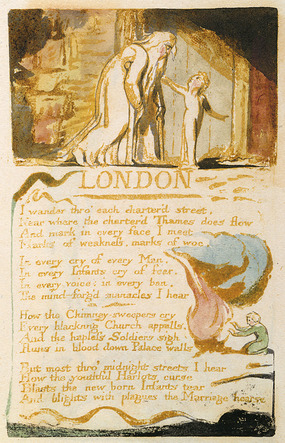
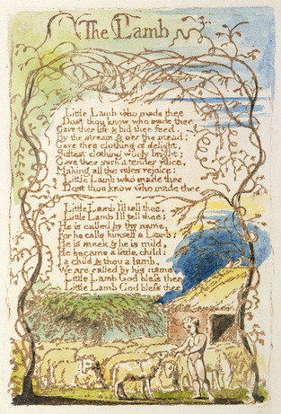
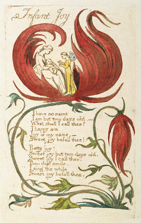

{kind=link}
{kind=link}
{kind=link}
{kind=link}
{kind=link}
|  2nd version
(cleaned)
|
London William Blake I wandered through each chartered street, Near where the chartered Thames does flow, A mark in every face I meet, Marks of weakness, marks of woe. In every cry of every man, In every infant's cry of fear, In every voice, in every ban, The mind-forged manacles I hear: How the chimney-sweeper's cry Every blackening church appals, And the hapless soldier's sigh Runs in blood down palace-walls. But most, through midnight streets I hear How the youthful harlot's curse Blasts the new-born infant's tear, And blights with plagues the Marriage hearse. |
London
is one of his gratest. This poem conveys Blake's view of the city,
of disease and suffering brought about by industialisation. "I" is referreto to the poet, the setting is in London and we are on the end oh 18th Centusy Blake perceives the scene by his sight and hearing Differences between Blake's "London" and Wordsworth's one. |
| The Tyger
William Blake Little
Tyger! Tyger! burning bright In
what distant deeps or skies And
what shoulder, & what art. What
the hammer? what the chain? When
the stars threw down their
spears, Tyger!
Tyger! burning bright
|
The Tyger is written in Blake's
original spelling,
is one of the most famous of all Blake's poems due to its powerful imageryand original rhythm.
Blake identified God's
creative process with the work of
an artist, by giving form to ideas. The speaker is the Poet (Blake),
and the adressee is the Tiger
(Tyger in the poetry). As in "The Lamb" we can se the
pronoun "he" referring to
Christ (the Creator).
|
|
|  |
The Lamb Does thou know who made thee Gave thee life & bid thee feed. By the stream & o'er the mead; Gave thee clothing of delight, Softest clothing woolly bright; Gave thee such a tender voice. Making all the vales rejoice: Little Lamb who made thee Does thou know who made thee Little Lamb I'll tell thee, Little Lamb I'll tell thee; He is called by thy name, For he calls himself a Lamb: He is meek & he is mild, He became a little child I a child & thou a lamb, We are called by His name, Little Lamb God bless thee, Little Lamb God bless thee.
|
The Lamb provides an
interesting insight
into the issue of the Creation and the figure of the poet. The speaker is the Poet (Blake), and the adressee is the lamb. The speaker in this poetry is wondering about creation, in the second stanza we can se that with the pronoun"he" Blake speaks about Christ. In the line 18 we can see that he speaks to humanity, he said that we are all created by him.
|
|  |
Infant
Joy
by William Blake "I
have no name;
I am but two days old." What shall I call thee? "I happy am, Joy is my name". Sweet joy befall thee! Pretty joy! Sweet joy, but two days old. Sweet Joy I call thee: Thou dost smile, I sing the while; Sweet joy befall thee! |
This
Short Poem presents a simple
but intense introduction to the world of innocence and joy. The first speaker is Joy and he's only two days old ("newborn"). The other speaker in the story is probably the Poet (Blake). The rhyme scheme is not regular and different between the two stanzas. The length of the lines is quite short and variable. |
  |
The Little Black Boy by William Blake My mother bore me in the southern wild, And I am black, but oh my soul is white! White as an angel is the English child, But I am black, as if bereaved of light. My mother taught me underneath a tree, And, sitting down before the heat of day, She took me on her lap and kissed me, And, pointed to the east, began to say: "Look on the rising sun: there God does live, And gives His light, and gives His heat away, And flowers and trees and beasts and men receive Comfort in morning, joy in the noonday. "And we are put on earth a little space, That we may learn to bear the beams of love And these black bodies and this sunburnt face Is but a cloud, and like a shady grove. --------- "For when our souls have learn'd the heat to bear, The cloud will vanish, we shall hear His voice, Saying, 'Come out from the grove, my love and care And round my golden tent like lambs rejoice'," Thus did my mother say, and kissed me; And thus I say to little English boy. When I from black and he from white cloud free, And round the tent of God like lambs we joy. I'll shade him from the heat till he can bear To lean in joy upon our Father's knee; And then I'll stand and stroke his silver hair, And be like him, and he will then love me. |
It becomes
clear over the course of the poem, however, that
Blake had a deeper message to convey to his reader. In accordance
with this metaphor of the sun: "Look on the rising sun: there God
does live",
the fact that Blake speaks of "black bodies" and a "sunburnt face" seems to imply that black people are closer to God as a result of their suffering – for one can only become dark and sunburned as a result of being exposed to the sun's rays. Some critics
assert that the paleness of
the English boy in this |

Alberto Canducci